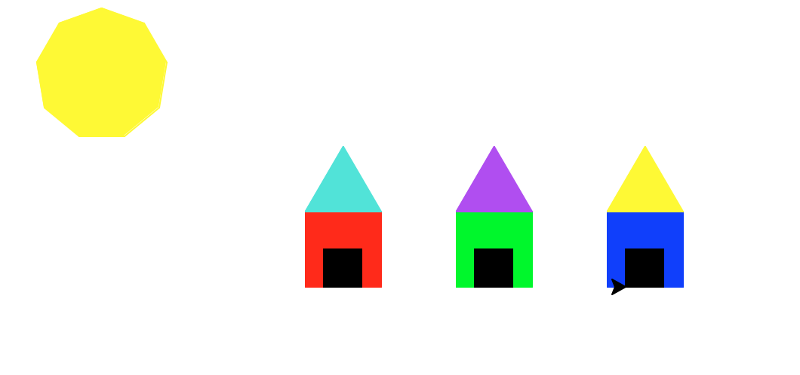

Hello, my name is Elise Bryant. I am an uprising junior at Alameda High School. In
the summer of 2016 I attended a 7 week coding class called Girls Who Code at the
Twitter Head Quarter in San Fransisco. Girls Who Code is a summer immersion program
where young women can learn the basics of coding. During this program, I got to
experience scratch, pthyon, pygame, robotics, html, css, and javascript. Many thanks
Reshma Saujani, the CEO and founder of Girls Who Code ,who has made me one of the
10,000 girls in this program, along with the many great opportunities and wonderful
rexperiences and Twitter for providing the space!
Obamicon of Beyonce
Artist Shepard Fairey created the an image
of Barack Obama using these specific colors
during the 2008 Presidential Campaign. It
is one of the most recognizable images of
the campaign. I have recreated it using a
picture of Beyonce.
Houses Made In Pygame

Using functions, loops, and parameters,
I designed these houses.
City Scroller Made In Pygame
I worked on a program called scratch, where I had to create a paddle ball
game. The game consist of a ball bouncing off the walls with a "paddle"
at the bottom sliding along the x-axis keeping the ball from touching the
bottom. If you would like to play.
Click here. Good Luck!!!